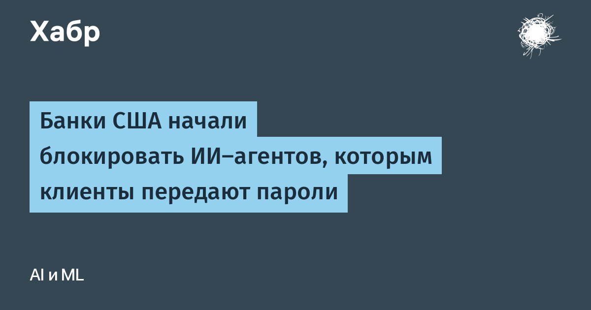

Как сообщил Axios, крупные американские банки фиксируют несанкционированных сторонних ИИ-агентов, работающих внутри счетов клиентов. Люди сами передают агентам свои учётные данные от интернет-банка, хотя это прямо противоречит правилам большинства банков. Отдельные агенты дошли до того, что обращались в службы поддержки банков и пытались выполнять операции, которые выглядели как не предусмотренные поручениями клиентов. Банки больше всего боятся самостоятельных переводов, при этом подтверждённых случаев хищения денег агентами пока нет, а Morgan Stanley вообще отрицает обнаружение «вышедших из-под контроля» агентов на своих платформах. Отдельного официального анонса банков нет — сведения Axios и Reuters основаны на источниках, знакомых с ситуацией.
Передавать агенту основной пароль не обязательно: Chase позволяет подключать сторонние приложения с ограниченным доступом через официальный механизм обмена данными, а посредник Plaid даёт разработчикам API для чтения банковских данных (с апреля 2026 года — с бесплатным пробным тарифом до десяти реальных счетов). Через Plaid работает и ChatGPT Finances: он анализирует расходы и накопления, но переводить деньги самостоятельно не может. Проблема в том, что чтение выписок и управление счетами — это разные уровни доступа: обычный клиент пока не может выдать агенту отдельный токен, например «переводи не больше N рублей», поэтому и идёт передача главного пароля.
У блокировок может быть и коммерческое дно: исследование McKinsey показывает, что независимые агенты умеют автоматически сравнивать тарифы и перекладывать накопления на более выгодные счета, подтачивая комиссионные доходы банков. Доказательств того, что нынешние блокировки диктуются именно этим, нет — но совпадение удобное.
Банк России планировал начать обязательное внедрение открытых банковских интерфейсов (open API) в 2026 году, но для системно значимых банков срок перенесён на 2027-й. Корпоративные API уже широко используются, а вот доступ физических лиц к данным своих счетов через независимые программы остаётся ограниченным. Так что российский пользователь, который захочет скормить свой счёт ИИ-агенту, скорее всего, получит ровно ту же картинку, что сейчас в Америке: либо официальные помощники самого банка, либо серый вход по чужому паролю.
Что делать, если вы уже дали агенту банковский пароль: смените пароль в интернет-банке, включите уведомления об операциях и пересмотрите выданные агенту права. Операции «от имени клиента» банк будет считать вашими — пока индустрия не придёт к токенам с ограниченными правами, доверие к агенту фактически равно доверию к себе.